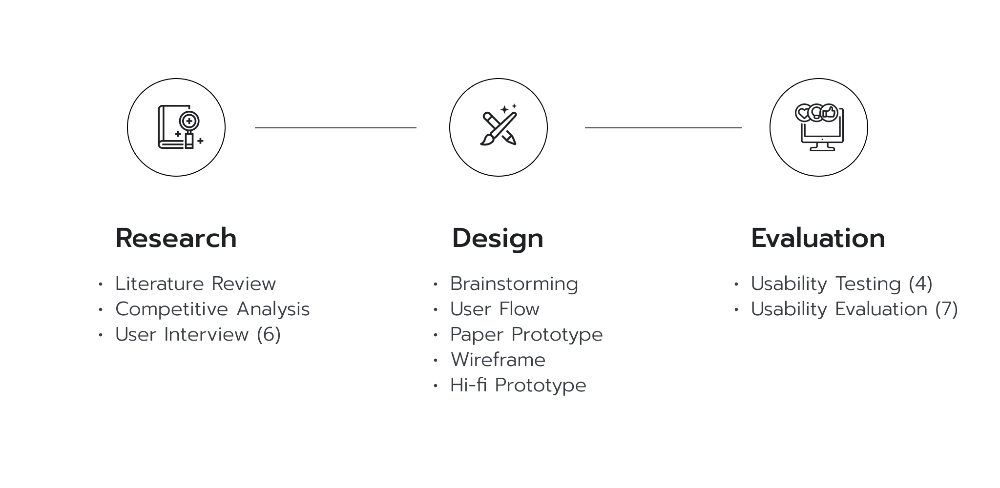
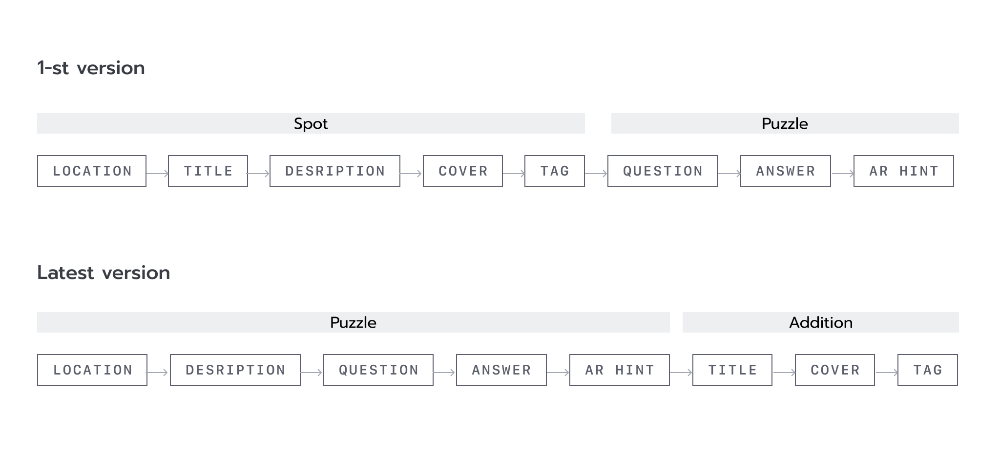
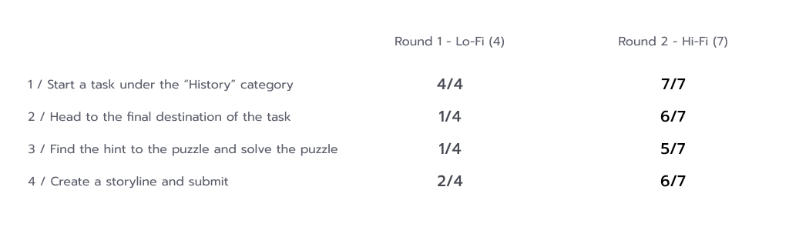

overview
Problem
How might we encourage people to share and explore unique places in the city and stories behind them with augmented reality?
At the time we were designing, most real-world AR experience is generated by algorithm, single-user and limited to certain area. We want to explore new possibility of location-based AR experience by encouraging people to share and explore unique places in the city and stories behind them with augmented reality.
The challenging part of the project is that we started with a technology instead of a solid user need. Another challenge is testing and communicating our ideas in prototypes without actual implementation.
Solution
A mobile app which offers user-generated puzzle-solving experience in real world
- Explorer could find interesting spots and solving a puzzle about them.
- Creator could share anecdotes about spots by creating a puzzle for explorers.
approach
My Role
Product & AR Designer
Team
Collaborate with Ruikun Wang (UX Researcher)
Duration
Sept-Dec 2022, 4 month
Tool
Miro, Figma, Unity, Xcode, Final Cut Pro
Process
Research & Ideate
Methods we used
Literature review
We looked through papers on location-based augmented reality experiences, which helped us understand what had already been done.
Semi-structured interview
With possible problem space contexts coming from previous second-hand research, we interviewed 6 participants to identify the problem we wanted to focus on.
Competitive analysis
We looked through products related to the topic of augmented reality and location-based experience to find opportunities as well as inspiration.
Synthesis and brainstorm
We went through all interview transcripts and synthesized key insights, which informed us of the problem. Then we brainstormed on the possible solutions.
Problem we decided on
" How might we encourage people to share and explore unique places in the city and stories behind them with augmented reality? "
Why there’s AR opportunities?
- Single-user experience: Most world-scale AR application provides single-user experience, which relied on contents either generated by algorithm(Google map AR) or premade 3D character (PokemenGo)
- Limited to certain area: Most AR application related to city exploration is limited to certain area/place (Berlin Wall App)
- Increased accuracy in world annotation
What’s the user problem?
During our user interview, we discovered that people hope to find unique and unexpected spots in the city, which they usually get to know by word-of-mouth recommendations. On the other hand, the city lacks an interesting way of presenting its stories and anecdotes, which leads people to have little interest in regular historical sites.
Therefore, our guiding question is how might we encourage people to share and explore unique places in the city and stories behind them with augmented reality?
Ideation
We look into different city exploration experience, we identified 3 typical patterns we could continue work on and decided to work on the puzzle-solving approach. There are 2 roles in this methods: explorer could find interesting spots and solving a puzzle about them; creator could share anecdotes about spots by creating a puzzle for explorers.
Design Process
User Flow
Organize users' action and required information
sketch to hi-fi
Iterations
1 - How to help user quickly find place or puzzle that arouses their interest?
2 - How to guide user to find the hint in the spot and solve the puzzle?
Key iteration: Status bar, notification illustration, and mapping of them
Design rationale on the AR guide form
Design rationale on how to trigger next step when user find the AR hint
3 - How to make the whole creation process easy and effortless?
Iteration of creation flow
Iteration of the structure of each page
Usability Test
Method
We conducted task-based usability testing which includes 4 major tasks in our system with a think-aloud method. In the first round, we test interactive lo-fi prototype with 4 participants. In the second round, we test interactive hi-fi prototype and implemented AR prototype with 7 different participants.
Result
Latest Design
Explorer flow
Creator flow
Design system
I created a design system and component asset from scratch to ensure the consistency of the visual and feeling of our product. Our goal is to create a sense of playfulness and curiosity.
Moodboard
Design system
Reflection
What I learnt
- Different process for technology-driven problem: For our problem of exploring the new possibility of world-scale AR experience, user research is not that useful. Therefore, we conducted literature reviews and competitive analyses to uncover location-based AR opportunities. Later, we use user research to further reduce the problem's scope and verify our hypothesis.
- Prototype and test AR features often and early: During the lo-fi testing phase, we used Figma to build a static AR mockup and test, which didn't provide much useful user insight. When we brought the prototype building in Unity to the users, we discovered many interaction problems we didn't realize in the previous phases. I realized that AR is built and used in a 3D environment. It needs spatial thinking and awareness than a pure 2D interface, as well as rapid prototyping, testing, and iteration.
- Visualize and document ideas: During our discussions, we often have different ideas and perspectives toward our design. It was beneficial when we visualized all our thoughts and listed all the trade-offs in our discussions. The proper document also helps us to think and reflect.
What I could do differently
This project is my schoolwork for the Interaction Design course. Looking back at the end of the semester with the new knowledge and input I gained, I realized the things I could do differently:
- Read more broadly in the research phase
- Test early with the paper prototype
- Proper prepare and document usability testing
Next step
- Adaptive color solution: During our testing, we found that the color of AR footprint will blend into certain surface, which need adaptive color solution to make it more distinctive wherever it’s.
- More flexibility for creator: Currently the creator could only choose from two options, under which there’s no other options for style. In the future, I would like to add more options of hint style for the creator to make the experience more fun and personalized.
- Motivation system: More fun and engaging motivation system need to be designed to further encourage users to participate in the exploration and creation.


{kind=link}
{kind=link}
{kind=link}
{kind=link}
{kind=link}
{kind=link}
{kind=link}
{kind=link}
{kind=link}
{kind=link}